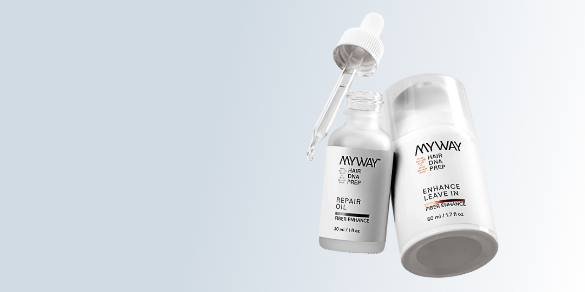

Designing for
trust-driven conversion
How UX, visual hierarchy and ecommerce strategy create a premium, confidence-driven shopping experience.

A premium haircare brand, built to sell online.
My Way Hair DNA is a direct-to-consumer ecommerce experience designed from concept to execution. The project focused on translating a premium brand identity into a digital shopping experience that feels intuitive, trustworthy and conversion-oriented.
Rather than designing for aesthetics alone, the goal was to create an experience that actively supports confident purchasing decisions.
Selling confidence is harder than selling products.
Haircare ecommerce is a saturated, highly competitive space. Users are often hesitant, overwhelmed by options and unsure whether a product will truly work for them.
The challenge was to reduce that uncertainty through design — a clear, focused experience that builds trust, communicates value quickly and removes friction throughout the buying journey.
High perceived risk, high decision fatigue.
Users purchasing haircare online carry real doubt: Will this work for my hair? Is it worth it? Every unanswered question is friction between interest and purchase.
The UX strategy relied on secondary research, ecommerce benchmarks and established usability heuristics rather than primary testing — a pragmatic approach for a commercial timeline.
Designed to feel premium. Built to perform.
Benefit-first product pages
Users understand value immediately — recognition over recall.
Strong visual hierarchy
Guides attention and reduces friction, following natural scanning patterns.
Minimal checkout
Fewer steps, less abandonment — grounded in cognitive load theory.
How people actually shop.
- 01Users scan before they read.
- 02Clear benefits reduce hesitation.
- 03Trust precedes conversion.
- 04Lower cognitive load improves completion.
A palette built for clarity and accessibility.
The colour system ensures strong contrast ratios and visual consistency across the experience. Primary tones provide structure and hierarchy; secondary accents support interaction and guidance without overwhelming the user.
Every colour was selected and validated against WCAG standards, ensuring readability across contexts and devices.
A typographic system designed for clarity and trust.
The type system balances brand expression and usability. IvyOra brings a premium, editorial feel to key messages, while Inter keeps product information, benefits and support content clear and readable.
Stronger, healthier hair
Used for headlines to create emotional impact, visual distinction and a more premium brand presence.
Science-backed care
Chosen for high readability across product descriptions, ingredient explanations and long-form content.
What worked. What I'd improve.
This project reinforced the importance of aligning design decisions with business goals. With access to live data, future iterations would focus on A/B testing hero messaging, refining product-page structure and optimising checkout steps.